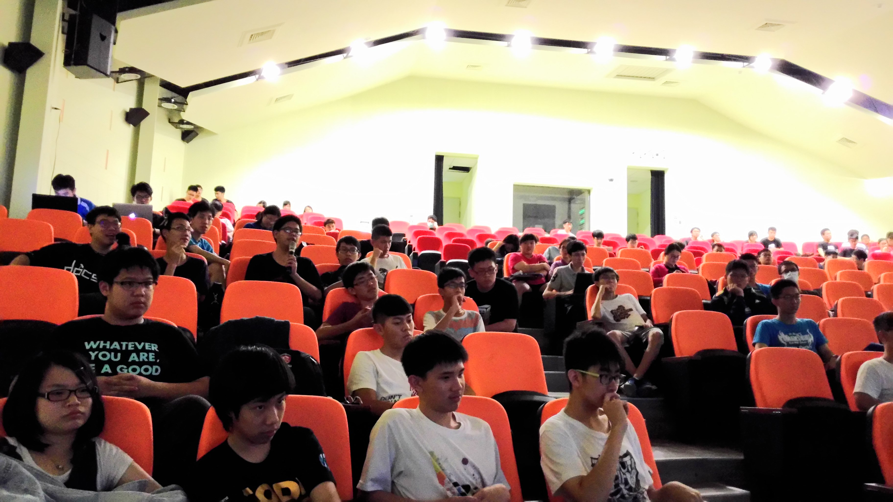
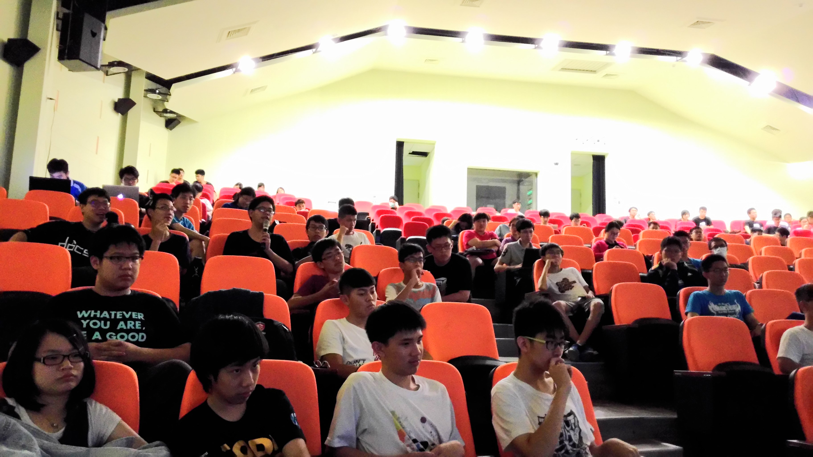

歡迎來到 INFAS 2017！
我們是一群對資訊有強大興趣、技能
以及滿腔熱血的高中生
透過聯展，我們將資訊推廣至高中個角落
使我們互相切磋琢磨，並分享自己的知識與成果！
歡迎來到 INFAS 2017！
我們是一群對資訊有強大興趣、技能
以及滿腔熱血的高中生
透過聯展，我們將資訊推廣至高中個角落
使我們互相切磋琢磨，並分享自己的知識與成果！
Information Associate of Students - joint show (INFAS.js 或 INFAS)，中文為高中資訊學術聯展，於今年初創立。
創立之初由四校：新竹高中、科園實中、竹北高中與武陵高中組成，共同籌畫了5月29日於科園實中舉辦之聯展。
我們是一個平面化組織，意即所有工人都能共同參與活動的討論。
為了努力籌畫一年一度的聯展，努力推廣資訊，並且展現我們的成果，
我們需要的不只是資訊強者，還需要其他多元技能，包括設計、空間規劃、流程安排等！
因此只要對資訊有興趣，INFAS 2017 需要你的協助！一起讓INFAS變得更好，寫下新的一頁！
請點按向下鍵觀看今年活動照片！
負責根場地有關的大小事務，包括：
場務組所需要的專業技能應該是所有組別裡算是比較少的，但事項也相對較多，人數需求最大。活動當天會希望大家當天都有空支援，不過不能來也沒關係，場務組也有許多其他事前的工作喔。場務組就是個人越多每個人事情絕對會越少(喂XD)的組別，所以歡迎加入啦~~~
負責美工設計與排版的部分，包括：
文創組需要一些對設計比較有經驗、專業的人才(而不限定是否有資訊能力)，因此請務必在表單上填寫相關的經驗(尤其是在adobe系列軟體的處理經驗)，我們會特別對這組的報名人做審核。希望有設計能力的你可以來支援我們！
應該很明顯，就是管錢啦~工作包括以下
財務組需要的是能夠清楚管理金錢流向的人員，人數需求並不多，但要求每個都有能力掌握最新的金流情況喔。
議程組主要是計畫活動當天的進行，細節包括：
議程組可能需要一些有些資訊能力的人來對稿件進行審核，對於議程的順序安排也會比較有利。歡迎有資訊程度或善於安排行程的人加入議程組^^。
銷售組當然是要把我們的產品推銷出去囉~細節如下：
銷售組需要一些有創意的元素，以及成功的推銷策略，歡迎有各種奇特想法和推銷手段(咦?)的你來銷售組喔~
喜歡認識人脈，擴展視野的機會在這裡喔！加入公關組會是最好的選擇，簡單來說，公關組的工作有以下：
想當然爾，我們非常需要有特殊關係的人才，但就算是沒有，也可以加入宣傳行列！！！公關組歡迎大家。
公關組歡迎大家OwO
記錄各種東西：
紀錄組希望是有比較專業的相機，不過沒有也沒關係，如果你喜歡拿傻瓜相機或手機拍照，也非常歡迎你!!或者你想要寫個新聞稿讓全台灣喔不全世界為之一亮，也可以來紀錄組喔~

 
